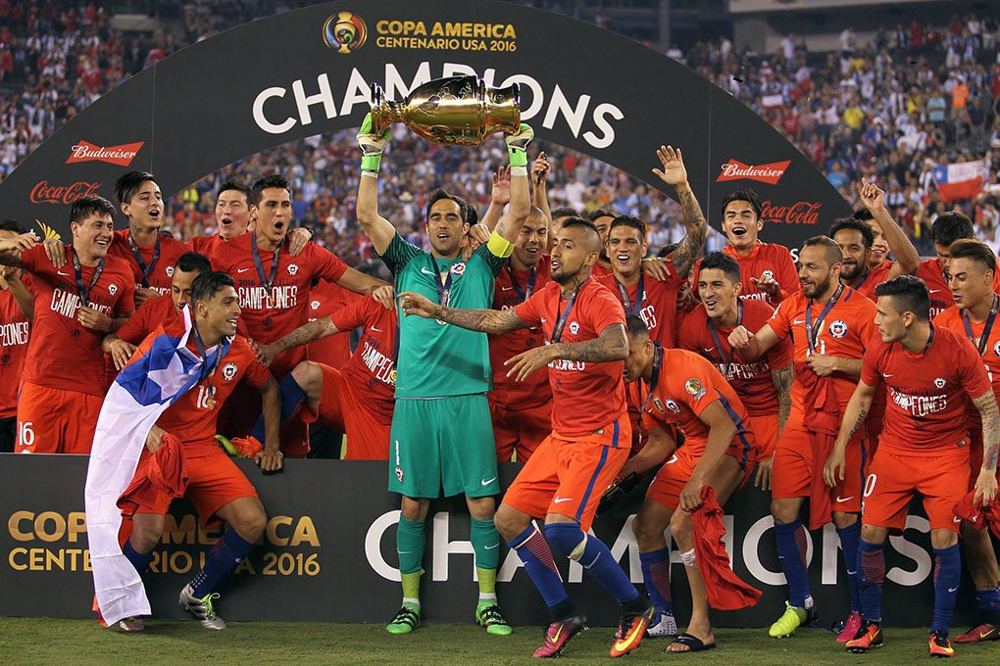

| Chile venció 4-2 a Cabo Verde en amistoso internacional |

Fútbol |
La selección chilena reaccionó en el segundo tiempo y derrotó a Cabo Verde por 4-2 en un nuevo amistoso, aprovechando mejor sus oportunidades ofensivas. |
| La Roja mostró mejoría ofensiva en el complemento |
Fútbol |
El equipo dirigido por Nicolás Córdova elevó su nivel en la segunda parte del encuentro, dejando señales positivas en ataque y generación de juego. |
| Agenda deportiva nacional sigue marcada por amistosos y análisis del recambio |
Actualidad deportiva |
Tras el triunfo, los medios deportivos chilenos centraron el debate en el rendimiento de la selección y en las opciones de nuevos nombres para futuros desafíos internacionales. |